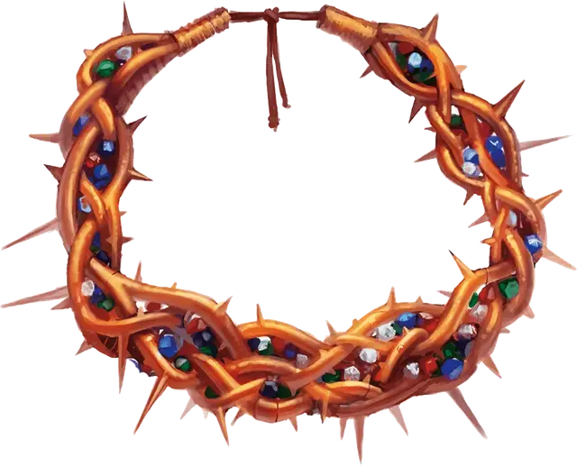

Радужный венец
Wreath of the Prism
Чудесный предмет, легендарный (требуется настройка)

Рекомендованная стоимость от 50 001 зм
Этот обруч из золотых шипов украшен десятками драгоценных камней, представляющих пять цветов Тиамат.
Дремлющий. Пока вы носите венец находящийся в дремлющем состоянии, вы получаете тёмное зрение на расстоянии 60 футов. Если у вас уже есть тёмное зрение, то венец увеличивает радиус вашего темного зрения на 60 футов.
Когда вы попадаете атакой по зверю, дракону или монстру с опасностью 5 или ниже, или когда вы берете его в захват, вы можете использовать венок, чтобы наложить подчинение чудовища [dominate monster] на существо (Сл спасброска 13). При успехе цель невосприимчива к силе венца в течение 24 часов. При провале мерцающее золотое изображение венца появляется как ошейник на шее жертвы или как корона на её голове (по вашему выбору), пока очарование на нём не закончится. Если вы используете венец, чтобы очаровать другое существо, заклинание на первом существе немедленно заканчивается. Когда заклинание заканчивается, цель помнит, что она была очарована вами.
Пробуждённый. Как только радужный венец достигает пробуждённого состояния, он получает следующие преимущества:
- Вы можете с помощью венца воздействовать на существ с опасностью 10 или ниже.
- Сл спасброска против заклинания венца увеличивается до 15.
Возвышенный. Как только радужный венец достигает возвышенного состояния, он получает следующие преимущества:
- Вы можете с помощью венца воздействовать на существ с опасностью 15 или ниже.
- Сл спасброска против заклинания венца увеличивается до 17.